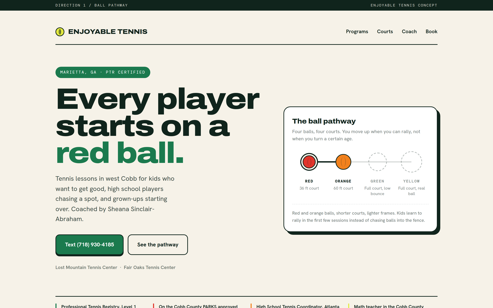
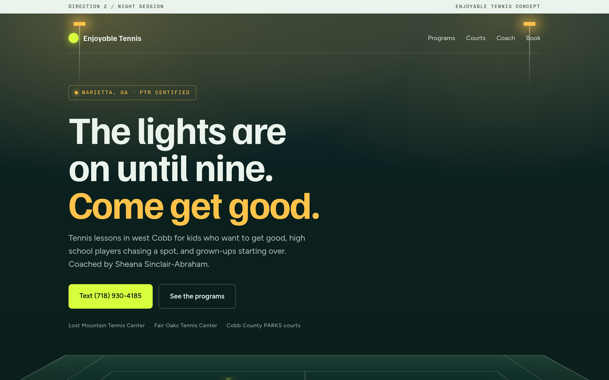
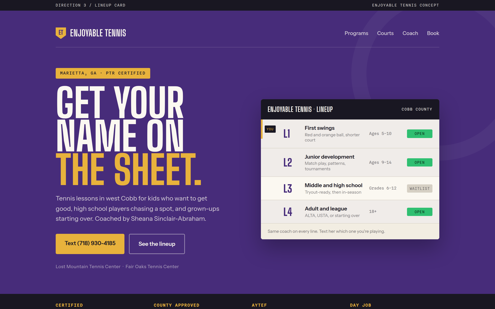

Each one is a real page, not a picture. Open them on your phone and scroll. They all use her real facts, real rates, and the same phone number. Pick one and the whole site gets built in that direction, logo colors dropped in on top.

Built on the real red, orange, green, yellow ball progression that junior tennis actually uses. The kid sees a level to climb. The parent sees a curriculum, not a hobby.
Downside: it leans junior, so the adult league player is the second thought.

Lights on, courts glowing after dinner. The teenager sees something that looks cool enough to post. Works hardest for high school players and adults who can only play at night.
Downside: dark sites feel less warm to a parent booking for a seven-year-old.

The team sheet posted on the fence, lines L1 through L4, your name on it. The kid wants to move up a line. Reads like school sports, which is exactly where these families already live.
Downside: the team metaphor is thin for an adult who just wants a lesson.
The current live page at /tennis is a fourth point in the space, the cream and navy one with the scroll swing. Say a number and I build the real site in that direction. Her logo still decides the final palette, so whichever wins gets re-pointed once we have the file.
{kind=link}
{kind=link}
{kind=link}